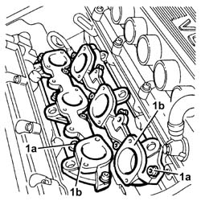

1072B12 INTAKE MANIFOLD (ONE) LH OR RH - R R AND REPLACE GASKET
- Path
- Procedures > 10 ENGINE UNIT > 1072 INLET AND EXHAUST MANIFOLDS > 1072B INLET MANIFOLDS > 1072B12 INTAKE MANIFOLD (ONE) LH OR RH - R R AND REPLACE GASKET
- Kind
- repair procedure (removal / refitting; the operation number is the code)
- Applies to
- engines: 3.2 V6; all production periods
- Interactive page
- https://sloeber94.github.io/elrnDB-aGt/en/#/125001076
Applies to: engines: 3.2 V6; all production periods
 Removing
Removing
 Refitting
RefittingEnsure that the ignition key is in the OFF position, then disconnect the negative battery terminal (-).
Name | Connector | |
|---|---|---|
- | Battery | See A1B BATTERY ( BATTERY NEGATIVE ) |
Proceed with removal
Op. 1072B42 LEFT HAND OR RIGHT HAND INLET MANIFOLD (ONE) - R+R
Proceed with removal
1. Undo the bolts (1a) and remove the relevant inlet manifold (1b).
1056B62 l/h and r/h fuel pipe assembly - with injectors - r + r
Remove the gasket.

Applies to: engines: 3.2 V6; all production periods
Refitting
RemovingPlace the intake manifold complete with gasket back in its housing and secure it tightening the bolts to the recommended torque.
 | Fastening | Component | Ø | Value (daNm) |
|---|---|---|---|---|
- | Bolt | INLET MANIFOLD | M8 | (Cylinder head side) 1.9 ÷ 2.3 |
Proceed with refitting
1056B62 l/h and r/h fuel pipe assembly - with injectors - r + r
.
Proceed with refitting
Op. 1072B42 LEFT HAND OR RIGHT HAND INLET MANIFOLD (ONE) - R+R.
Connect the negative (-) battery terminal